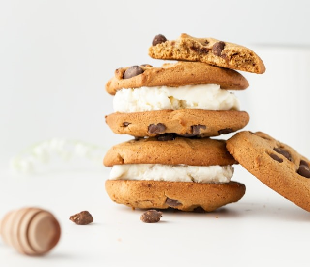
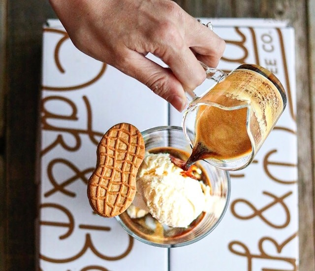
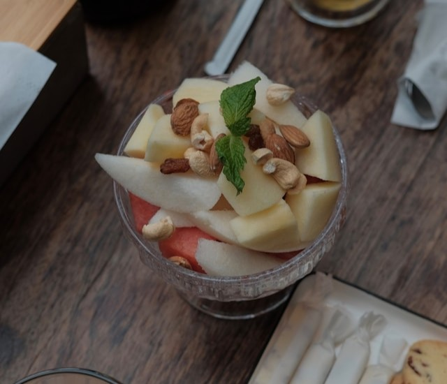
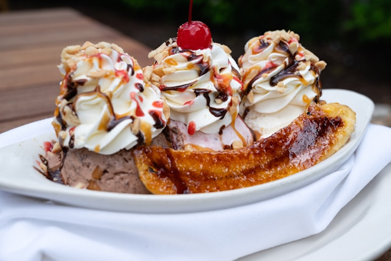
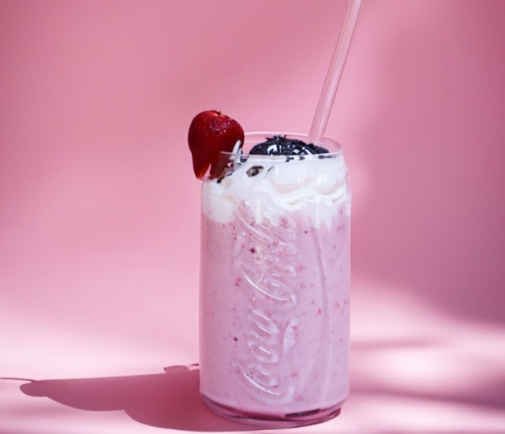
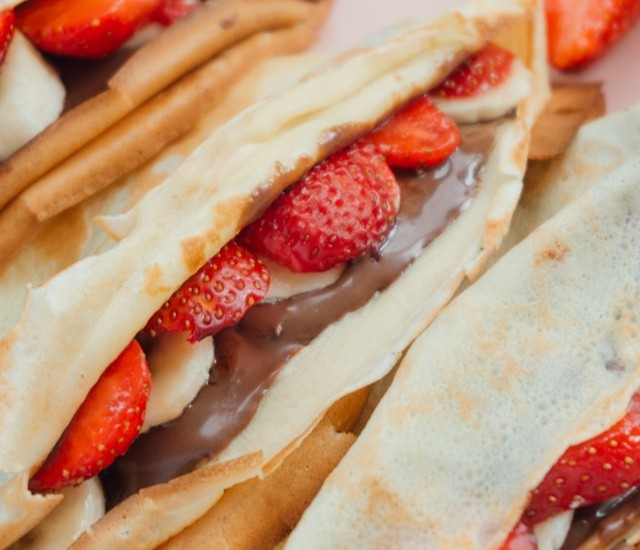

Preporuke za serviranje: zabavni recepti sa sladoledom!
Ako niste ljubitelj sladoleda samog po sebi ili samo volite isprobavati nove stvari, pobrinuli smo se da se i za Vas pronađe nešto, stoga nudimo nekoliko zanimljivih načina serviranja sladoleda.
Sendvič fantazija
Uzmite dva omiljena (po želji čokoladna) keksa i između njih stavite jedan debeli sloj našeg sladoleda okusa po želji. Lagano pritisnite pa uvaljajte rubove u šarene mrvice, sjeckane lješnjake ili nešto slično. Zamrznite na 20 minuta i uživajte u svom sladolednom sendviču!

Affogato
Najjednostavnija talijanska poslastica: staklenu čašu stavite jednu veliku kuglicu našeg sladoleda od lješnjaka ili čokolade i prelijte je svježe kuhanom vrućom kavom po izboru. Ovakav spoj toplog i hladnog, gorkog i slatkog čista je magija kojoj nijedan kavoljubac neće moći odoljeti!

Sladoledno-voćni kup
Narežite sezonsko voće (jagode, banane, borovnice i sl.) na dno zdjelice. Dodajte nekoliko kuglica našeg ukusnog voćnog sladoleda i ukrasite s još malo voća, orašastih plodova ili svježeg šlaga i listićem mente. U ovom ćete kupu pronaći savršeno osvježenje za ljetne dane.

Banana split
Desertni klasik koji nikada ne izlazi iz mode! Prerežite bananu po dužini i stavite je u duguljastu zdjelicu. Između polovica banane dodajte po jednu kuglicu našeg sladoleda i malo šlaga. Prelijte čokoladnim sirupom, dodajte malo sjeckanih oraha i nezaobilaznu trešnju na vrhu. U slast!

Frape sa šumskim voćem
U blender ubacite dvije velike kuglice sladoleda od jagode ili maline, 150ml hladnog mlijeka i šaku svježih malina, borovnica ili drugog šumskog voća. Miksajte dok ne postane gusto i pjenasto. Poslužite u visokoj čaši sa širokom slamkom i ukrasite s nekoliko cijelih bobica voća na vrhu.

Palačinke sa sladoledom
Ispecite palačinke po uobičajenom receptu. Dok su još tople, namažite ih čokoladnim ili voćnim namazom pa dodajte kuglicu svog omiljenog sladoleda i narezano voće po želji. Preklopite napola dva puta (da dobijete trokut) i dodajte još malo sladoleda na vrh, šlag, preljev i šarene mrvice. Mališani će biti oduševljeni!